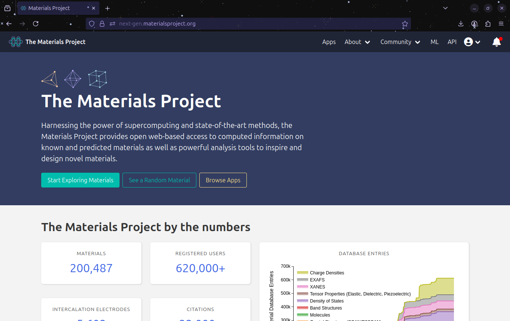
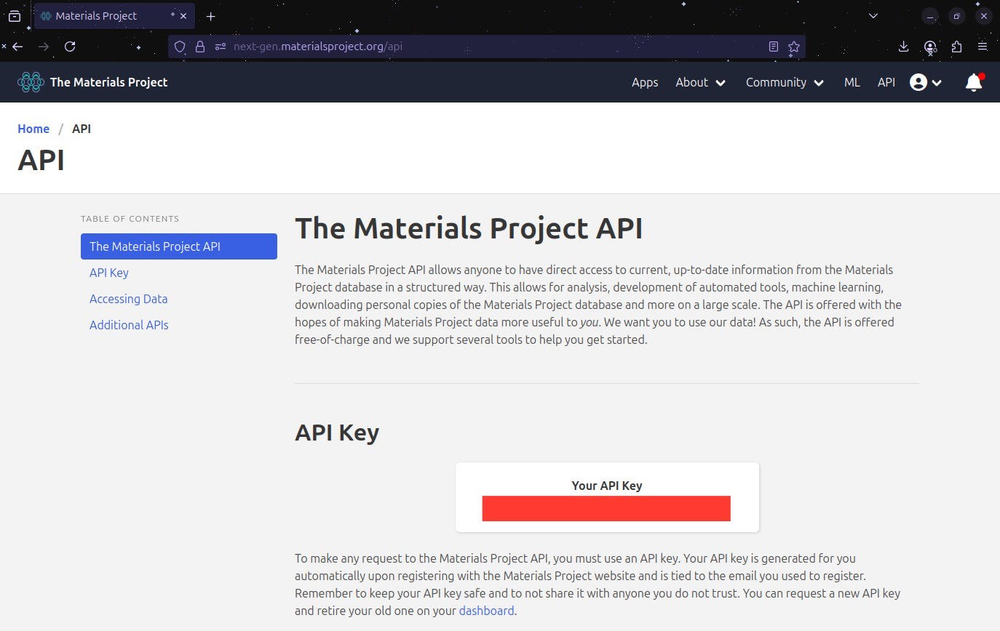

Querying Materials Data from the Materials Project using Pymatgen#
In this tutorial, we will learn how to query material data from the Materials Project database using pymatgen, a powerful Python library for materials science.
By the end of this tutorial, you will be able to:
Set up your Materials Project API key
Query materials by formula, elements, or material ID
Retrieve structural, thermodynamic, and electronic properties
Download
.ciffiles for visualization and simulationsPerform a sneak peek into structure manipulation using pymatgen
In the previous tutorials we have become familiar with Materials Project and Pymatgen. Now we are going to use them together.
Step 1 - Import Necessary Libraries#
# Import main tools
from mp_api.client import MPRester
from pymatgen.core import Structure
# We will also use pandas to make the data more readable
import pandas as pd
/home/paladin/anaconda3/envs/matdata/lib/python3.11/site-packages/tqdm/auto.py:21: TqdmWarning: IProgress not found. Please update jupyter and ipywidgets. See https://ipywidgets.readthedocs.io/en/stable/user_install.html
from .autonotebook import tqdm as notebook_tqdm
Step 2 - Setting Up the API Key#
To query the Materials Project database, you need an API key. This is necessary to make any request to the Materials Project API and there’s a unique key for each Materials Project account.
Important
You should not share your API key with anyone.
Steps to get you API key:
Go to Materials Project
Log in or create a free account. This step was done when we were introducing Materials Project. If you need more guidance, please revisit the tutorial: Exploring Materials Project
We are going to the main page of Materials Project after logging in, which should look like this:

Then we go to the top right and click on the API button and it will shows us this new page:

Your personal API key should appear where the red line is located in the image. You can select and copy it, and then paste it in the following cell as indicated:
Note
To run this notebook, you must provide your own Materials Project API key.
Log in as indicated in Materials Project → Dashboard → API Key.
Replace "YOUR_API_KEY_HERE" in the code cell below.
# Replace with your own API key! (keep the '' signs)
API_KEY = "YOUR_API_KEY_HERE"
if API_KEY == "YOUR_API_KEY_HERE":
print("⚠️ Please replace 'YOUR_API_KEY_HERE' with your Materials Project API key.")
mpr = None
else:
mpr = MPRester(API_KEY)
print("✅ MPRester initialized successfully!")
⚠️ Please replace 'YOUR_API_KEY_HERE' with your Materials Project API key.
Step 3 - Querying by Chemical Formula#
Let us start with a simple query: searching for all materials with the formula \(\text{CaTiO}_3\).
MPRester.query() lets us specify:
The criteria (what we are looking for)
The properties (what we want return)
For now, we will extract:
Material ID (
material_id) \(\rightarrow\) Unique identifier used by Materials ProjectFormula (
formula_pretty) \(\rightarrow\) Simplified chemical formulaFormation energy per atom (
formation_energy_per_atom) \(\rightarrow\) Energy required to form the compound (eV/atom)Band gap (
band_gap) \(\rightarrow\) Band gap energy in electronvolts (eV)
There are plenty of properties to retrieve from the query. Here is a list of all of them:
[‘builder_meta’, ‘nsites’, ‘elements’, ‘nelements’, ‘composition’, ‘composition_reduced’, ‘formula_pretty’, ‘formula_anonymous’, ‘chemsys’, ‘volume’, ‘density’, ‘density_atomic’, ‘symmetry’, ‘property_name’, ‘material_id’, ‘deprecated’, ‘deprecation_reasons’, ‘last_updated’, ‘origins’, ‘warnings’, ‘structure’, ‘task_ids’, ‘uncorrected_energy_per_atom’, ‘energy_per_atom’, ‘formation_energy_per_atom’, ‘energy_above_hull’, ‘is_stable’, ‘equilibrium_reaction_energy_per_atom’, ‘decomposes_to’, ‘xas’, ‘grain_boundaries’, ‘band_gap’, ‘cbm’, ‘vbm’, ‘efermi’, ‘is_gap_direct’, ‘is_metal’, ‘es_source_calc_id’, ‘bandstructure’, ‘dos’, ‘dos_energy_up’, ‘dos_energy_down’, ‘is_magnetic’, ‘ordering’, ‘total_magnetization’, ‘total_magnetization_normalized_vol’, ‘total_magnetization_normalized_formula_units’, ‘num_magnetic_sites’, ‘num_unique_magnetic_sites’, ‘types_of_magnetic_species’, ‘bulk_modulus’, ‘shear_modulus’, ‘universal_anisotropy’, ‘homogeneous_poisson’, ‘e_total’, ‘e_ionic’, ‘e_electronic’, ‘n’, ‘e_ij_max’, ‘weighted_surface_energy_EV_PER_ANG2’, ‘weighted_surface_energy’, ‘weighted_work_function’, ‘surface_anisotropy’, ‘shape_factor’, ‘has_reconstructed’, ‘possible_species’, ‘has_props’, ‘theoretical’, ‘database_Ids’]
# Query CaTiO3 structures
results = mpr.materials.summary.search(
formula="CaTiO3",
fields=[
"material_id",
"formula_pretty",
"formation_energy_per_atom",
"band_gap"
]
)
# Convert results to DataFrame
df = pd.DataFrame([
{
"material_id": r.material_id,
"formula": r.formula_pretty,
"formation_energy": r.formation_energy_per_atom,
"band_gap": r.band_gap
}
for r in results
])
df
---------------------------------------------------------------------------
AttributeError Traceback (most recent call last)
Cell In[3], line 2
1 # Query CaTiO3 structures
----> 2 results = mpr.materials.summary.search(
3 formula="CaTiO3",
4 fields=[
5 "material_id",
6 "formula_pretty",
7 "formation_energy_per_atom",
8 "band_gap"
9 ]
10 )
12 # Convert results to DataFrame
13 df = pd.DataFrame([
14 {
15 "material_id": r.material_id,
(...) 20 for r in results
21 ])
AttributeError: 'NoneType' object has no attribute 'materials'
Step 4 - Querying by Material ID#
Suppose we want to retrieve detailed information for one specifi material. We will use its Materials Project ID
# Pick the first material ID from our query
material_id = df["material_id"].iloc[0]
print("Using material ID:", material_id)
# Fetch the structure directly
structure = mpr.get_structure_by_material_id(material_id)
structure
Using material ID: mp-3442
Retrieving MaterialsDoc documents: 100%|██████████| 1/1 [00:00<00:00, 7557.30it/s]
Structure Summary
Lattice
abc : 5.441143344248945 5.441143344248945 5.441143344248945
angles : 120.84549073210634 120.84549073210634 88.54170096725916
volume : 112.41312515722095
A : np.float64(-2.68573015) np.float64(2.68573015) np.float64(3.89611961)
B : np.float64(2.68573015) np.float64(-2.68573015) np.float64(3.89611961)
C : np.float64(2.68573015) np.float64(2.68573015) np.float64(-3.89611961)
pbc : True True True
PeriodicSite: Ca (2.686, 0.0, 1.948) [0.25, 0.75, 0.5]
PeriodicSite: Ca (-2.22e-16, 2.686, 1.948) [0.75, 0.25, 0.5]
PeriodicSite: Ti (0.0, 0.0, 3.896) [0.5, 0.5, -0.0]
PeriodicSite: Ti (0.0, 0.0, 0.0) [0.0, -0.0, -0.0]
PeriodicSite: O (-1.028, 1.658, 3.896) [0.8087, 0.3087, 0.1174]
PeriodicSite: O (1.028, 1.658, 2.22e-16) [0.3087, 0.1913, 0.5]
PeriodicSite: O (1.658, 1.028, 3.896) [0.6913, 0.8087, 0.5]
PeriodicSite: O (3.713, 1.028, 7.015e-17) [0.1913, 0.6913, 0.8826]
PeriodicSite: O (-1.11e-16, 1.11e-16, 5.844) [0.75, 0.75, -0.0]
PeriodicSite: O (0.0, 0.0, 1.948) [0.25, 0.25, -0.0]
Step 5 - Downloading the Structure as a .cif File#
Once we have the structure, we can save it locally in .cif format, which could be use for visualization, just like the previous tutorial, or simulations.
# Save CIF file
structure.to(filename="CaTiO3_from_MP.cif")
print("CIF file saved as 'CaTiO3_from_MP.cif'")
CIF file saved as 'CaTiO3_from_MP.cif'
Step 6 - Exploring Structure Properties#
Just as we learned on the previous tutorial, we can apply that knowledge and inspect the structure properties.
Lattice parameters (a, b, c)
Angles (α, β, γ)
Number of sites
Atomic species
# Lattice parameters
lattice = structure.lattice
print("Lattice parameters (Å):", lattice.abc)
print("Lattice angles (°):", lattice.angles)
print("Number of sites:", len(structure))
print("Atomic species:", structure.species)
Lattice parameters (Å): (5.441143344248945, 5.441143344248945, 5.441143344248945)
Lattice angles (°): (120.84549073210634, 120.84549073210634, 88.54170096725916)
Number of sites: 10
Atomic species: [Element Ca, Element Ca, Element Ti, Element Ti, Element O, Element O, Element O, Element O, Element O, Element O]
Step 8 - Summary#
In this tutorial, we learned how to:
Set up and authenticate with the Materials Project API
Query materials by formula, elements, or material ID
Retrieve properties like formation energy, band gap, and crystal system
Save structures as
.ciffilesPeek into pymatgen’s structure manipulation capabilities
Next Steps#
In the next tutorial, we’ll:
Perform data mining using Materials Project queries
Analyze large sets of materials to extract trends and correlations
Use plots and statistics to gain insights into materials properties